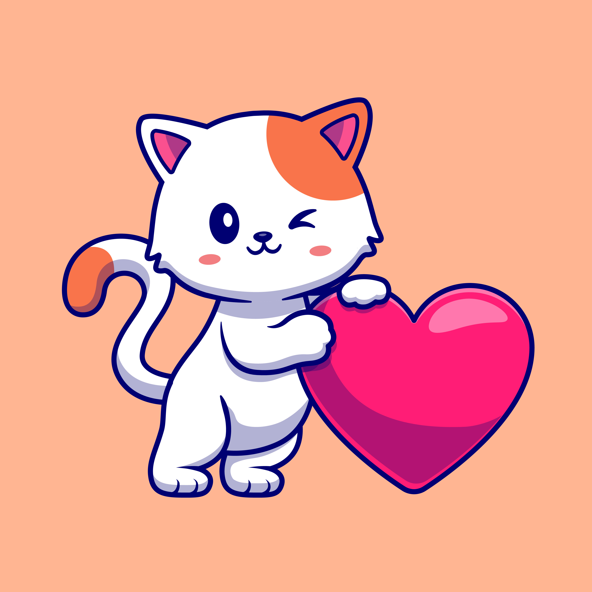

Un gato debe interactuar con humanos desde las 2 semanas de vida (hasta
las 16 aproximadamente). Pasado ese tiempo es casi imposible
domesticarlo

En inglés, un grupo de gatos bebé suele ser llamado KINDLE, a un grupo
de gatos adultos se los conoce como CLOWDER. También se le llama QUEEN a
una gata hembra y TOM al macho

Los ronroneos y maullidos de un gato son solo una pequeña parte de sus
habilidades vocales, de hecho, pueden hacer hasta 100 sonidos diferentes

Los gatos solo maúllan a los humanos, frente a otros animales bufan,
trinan o ronronean, pero jamás maúllan. También acostumbran a saludarse
entre sí tocándose las narices

Cuando se trata del desarrollo de un gato, el primer año de vida
equivale a 15 años humanos. Cuando un gato llega a los 2 años, se
traduce como 25 años humanos

La mayoría de los gatos pasan alrededor de 2/3 del día durmiendo.
También dedican 1/3 de sus horas de lucidez a bañarse

El olfato de un gato es realmente agudo, aproximadamente 14 veces mejor
que el de un humano

Una de las razones por la que los gatos se bañan con tanta frecuencia es
para quitarse nuestro olor

A los gatos no suelen gustarles las cosas dulces, sobre todo porque no
pueden saborearlas

Los gatos tienen estómagos sensibles (por lo que debés tener cuidado con
su menú). NUNCA les des cebolla, ajo, cebollas verdes, chocolates, uvas
o pasas de uva. La leche tampoco es recomendable ya que les provoca
malestar estomacal
Los gatos también tienen ombligos, pero no se parecen en nada al de los
humanos. Suelen estar 2/3 hacia abajo en el estómago, por lo que es muy
difícil hallarlos
Tu gato siempre te entiende cuando lo llamas por su nombre, pero elije
ignorarte. Se cree que esto sucede porque originalmente los gatos no
fueron domesticados para obedecer órdenes.
Si bien se asocia a los gatos negros con la mala suerte, en Inglaterra,
Asia, Francia y otros países se cree que traen prosperidad y felicidad
Los bigotes de los gatos están cubiertos de numerosas células nerviosas
y vasos sanguíneos, eso los ayuda a detectar los cambios a su alrededor
y saber si pueden pasar por un espacio estrecho, dado que los bigotes
tienen el ancho de sus cuerpos
Los gatos tienen una capa especial reflejante en los ojos llamada
tapetum lucidum, esta capa amplifica la luz que reciben y les permite a
los gatos ver unas 6 veces mejor que nosotros en la oscuridad y con poca
luz
El corazón de un gato late mucho más rápido que el nuestro, entre 110 y
140 latidos por minuto
Los gatos pueden dar a luz a gemelos idénticos, pero esto es un fenómeno
muy raro
Para los gatos, cubrir sus eses es un instinto natural
Los gatos tienen 32 músculos en las orejas, los mismos músculos los
vuelven capaces de rotar las orejas 180°
Los gatos suelen tener 5 dedos en las patas frontales y 4 dedos en las
patas traseras (pero los números pueden cambiar)
Los gatos pueden saltar con facilidad una distancia de 6 veces su largo,
esto es gracias a los poderosos músculos de sus patas traseras
Especialistas descubrieron que a los gatos les encanta que les toques la
cara, especialmente en la barbilla, alrededor de los labios y las
mejillas
En el mundo de los gatos también hay zurdos o diestros pero la mayoría
son zurdos
Los psicólogos dicen que los dueños de gatos tienden a ser personas
lógicas, prácticas e introvertidas. También dicen que los amantes de los
gatos cuentan más historias sobre sus mascotas que los dueños de perros
Los expertos confirman que vivir con un gato ayuda a aliviar el estrés,
la ansiedad y la depresión. Todo esto disminuye la presión sanguínea y
protege a tu cuerpo de problemas potenciales del corazón incluyendo los
ataques cerebrovasculares